Fingerprint Analysis: Preprocessing and Feature Extraction
Biometric Methods, Computer Vision in MATLAB®
Roland Bruggmann, BSc student Information Technology Specialisation in Computer Perception and Virtual Reality CPVR <mailto:roland.bruggmann@students.bfh.ch>
Bern University of Applied Sciences, Engineering and Information Technology Biel/Bienne, January 2016
References:
Maltoni, D. et al.: Handbook of Fingerprint Recognition, 2. ed., chapter 3: Fingerprint Analysis and Representation. Springer 2009.
Bazen, Asker M. and Gerez, Sabih H.: Systematic Methods for the Computation of the Directional Fields and Singular Points of Fingerprints. IEEE Transactions on Pattern Analysis and Machine Intelligence, vol. 24, No. 7, July 2002 (p. 905-919).
Contents
- 1) Capture
- 2) Preprocessing
- 2.1) Quality Enhancement
- 2.2) Variance, Quality and Segmentation
- 2.3) Gradients, directions and coherence
- Gradients Gx and Gy
- Local ridge orientation D (in radiant)
- Coherence C as reliability of orientation
- Enhance segmentation using binarized coherence
- Maskerading
- 2.4) Binarisation and skeleton
- 3.) Feature Extraction
- 3.1) Global Features
- Candidate region(s)
- Global features
- 3.2) Minutiae
- 3.2.1) Ridge endings
- 3.2.2) Bifurcations
Clear matrices, close figures and clear cmd wnd.
clear variables; clear globals; close all; clc;
1) Capture
Our capture is reduced to a read in of a raw fingerprint image. We use fingerprint images from FVC 2004, database 3, set B (see International Competition for Fingerprint Verification Algorithms 2004, BioLab, University of Bologna, Online: <http://bias.csr.unibo.it/fvc2004/>). We assume the image is in grayscales (white: 255, black: 0).
% I = imread('../FVC2004/DB3_B/103_6.tif'); I = imread('../fp-images/11_4.png'); [sizeX, sizeY] = size(I); figure; imshow(I); axis off; title('Original Image');

2) Preprocessing
2.1) Quality Enhancement
To largen the image quality we apply a high-pass filter (Laplacian of Gaussian LoG). First, we transform the image to its frequency domain using a Fast Fourier Transformation (FFT) and a shift. Then we augment the amplitude of the dominant frequencies over relatively small regions and finally retransform the image back to the spatial domain by the use of an inverse FFT (IFFT).
hsize = 3;
border = (hsize-1)/2;
hsigma = 0.2;
h = fspecial('log', hsize, hsigma);
J = fftshift(fft2(double(I)));
Jh = conv2(J,h);
Jh = Jh(1+border:end-border,1+border:end-border);
Ih = abs(ifft2(ifftshift(Jh)));
figure; imshow(log(max(abs(J), 1e-6)),[]), colormap(jet(64)); axis off; title('Amplitudes'); hold off; figure; imshow(log(max(abs(Jh), 1e-6)),[]), colormap(jet(64)); axis off; title('After LoG'); hold off; figure; imshow(Ih, []); axis off; title('Reslut'); hold off;
 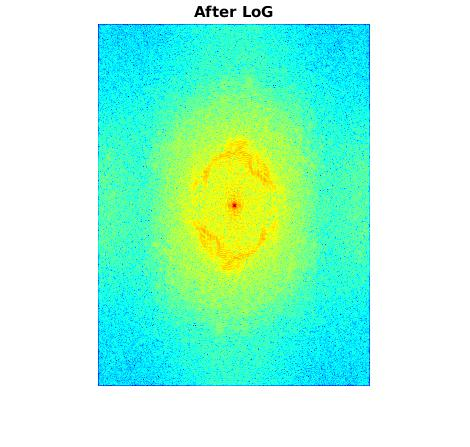
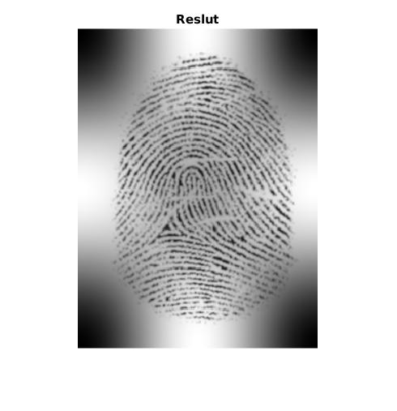
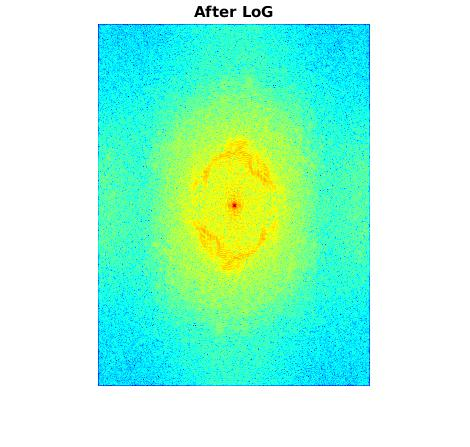
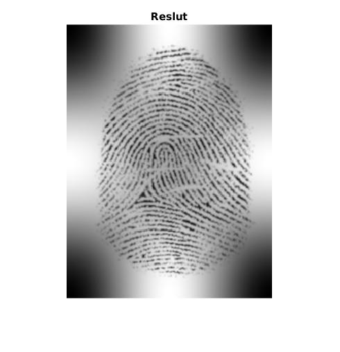
2.2) Variance, Quality and Segmentation
Segmentation using Gabor filters, cp. Maltoni, chapter 3.4 Segmentation (p. 116-119).
[V, Mask] = segmentTexture(I);
% Q = TODO
Iseg = double(I).*double(Mask);
figure; imshow(V, []); axis off; title('Variance'); hold off; % figure; imshow(Q, []); axis off; title('Quality'); hold off; figure; imshow(Iseg, []); axis off; title('Segmented'); hold off;
 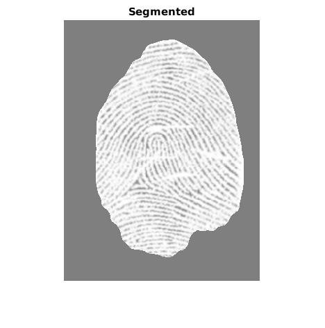
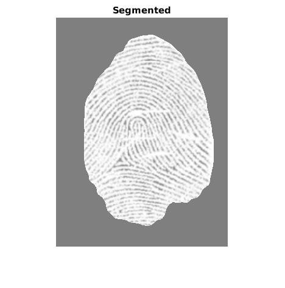
2.3) Gradients, directions and coherence
cp. Maltoni, chapter 3.2 Local Ridge Orientation, especially 3.2.1 Gradient-based approaches, p. 102-106 and Bazen/Gerez.
Gradients Gx and Gy
hsize = 7;
hsigma = 1;
h = fspecial('gaussian', hsize, hsigma);
[hx,hy] = gradient(h);
Gx = filter2(hx, I);
Gy = filter2(hy, I);
Local ridge orientation D (in radiant)
hsize = 17;
hsigma = 3;
h = fspecial('gaussian', hsize, hsigma);
Gxy = Gx.*Gy; Gxy = 2*filter2(h, Gxy);
Gxx = Gx.^2; Gxx = filter2(h, Gxx);
Gyy = Gy.^2; Gyy = filter2(h, Gyy);
denom = sqrt((Gxx - Gyy).^2 + Gxy.^2) + eps;
sin2theta = Gxy./denom; sin2theta = filter2(h, sin2theta);
cos2theta = (Gxx-Gyy)./denom; cos2theta = filter2(h, cos2theta);
D = pi/2 + atan2(sin2theta,cos2theta)/2;
Coherence C as reliability of orientation
minima = (Gyy+Gxx)/2 - (Gxx-Gyy).*cos2theta/2 - Gxy.*sin2theta/2; Imax = Gyy+Gxx - minima; z = .001; C = 1 - minima./(Imax+z); C = C.*(denom>z);
Enhance segmentation using binarized coherence
thresh = graythresh(C); Mask2 = im2bw(C,thresh).*double(Mask); CMask = double(C).*double(Mask); Iseg2 = Iseg.*Mask2;
figure; imshow(CMask,[]); axis off; title('Coherence'); hold off; figure; imshow(Iseg2,[]); alpha .5; axis off; title('Segmented 2'); hold off;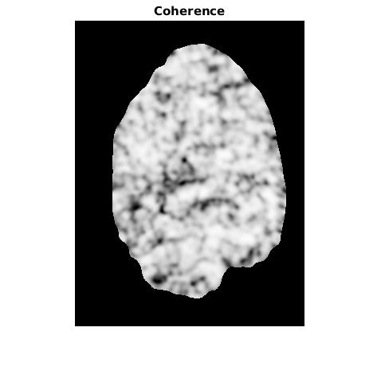

Maskerading
GxMask = double(Gx).*double(Mask2); GyMask = double(Gy).*double(Mask2); DMask = double(D) .*double(Mask2); [x,y,u,v] = directionmap(DMask, 6, Iseg2);
figure; imshow(Iseg2,[]); alpha .5; axis off; title('Gradients'); hold on; quiver(GxMask,GyMask); hold off; figure; imshow(Iseg2,[]); alpha .5; axis off; title('Directions'); hold on; quiver(x,y,u,v,0,'.','linewidth',1); hold off;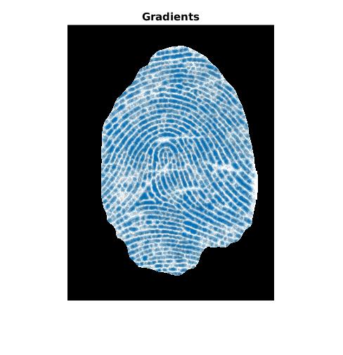
 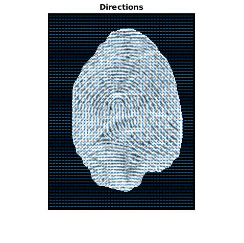
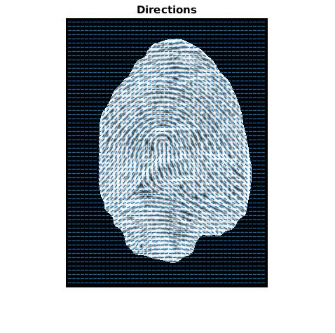

2.4) Binarisation and skeleton
Binarisation by threshold (TODO: Thresholded binarisation should be replaced by local binarisation). Then we generate a skeleton by thinning the region. We remove pixels from the border and spur pixels 20 times.
thresh = graythresh(I); binarised = im2bw(I,thresh); thinned = ~bwmorph(~binarised,'thin',Inf); % 'skel' skeleton = bwmorph(thinned,'spur',20); binarisedMask = binarised.*Mask2; skeletonMask = skeleton.*Mask2;
figure; imshow(binarisedMask,[]); axis off; title('Binarised'); hold off; figure; imshow(skeletonMask,[]); axis off; title('Skeleton'); hold off;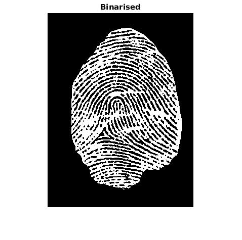 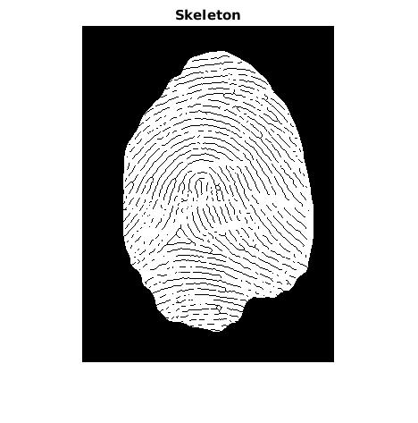
3.) Feature Extraction
3.1) Global Features
To extraxt the global features we use the coherence map. This time, we choose a large sigma for the Gaussian weighting used to sum the gradient moments (cp. Maltoni, p. 124). Then we extract the minima and find the coordinates of global features.
[Gx2, Gy2, D2, C2] = ridgeorient(I, 1, 17, 3); C2Mask = double(C2).*double(Mask); minima = ~imregionalmin(C2Mask); figure; imshow(C2Mask, []); axis off; title('Coherence 2'); figure; imshow(minima, []); axis off; title('Minima');
 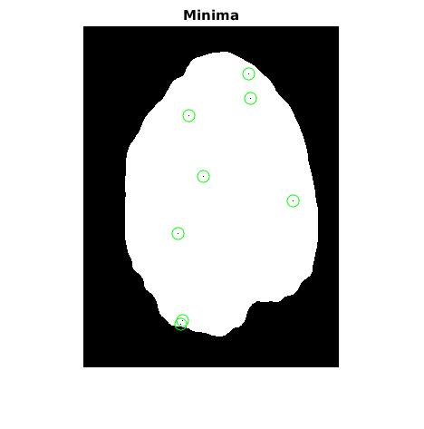
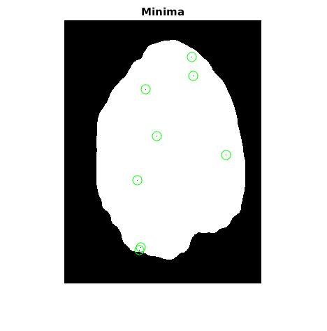
Candidate region(s)
candidateRegion = ~im2bw(C2Mask,0.5).*double(Mask); candidateRegionWithMinima = and(candidateRegion,double(minima)); figure; imshow(candidateRegion,[]); axis off; title('Candidate Region'); % figure; imshow(candidateRegionWithMinima,[]); axis off; title('Candidate Region with Minima');

Global features
featureGlobal = xor(candidateRegion,candidateRegionWithMinima); [globalY, globalX] = find(featureGlobal == 1); figure; imshow(I,[]); axis off; title('Global Features'); hold on; plot(globalX, globalY, '*c'); hold off;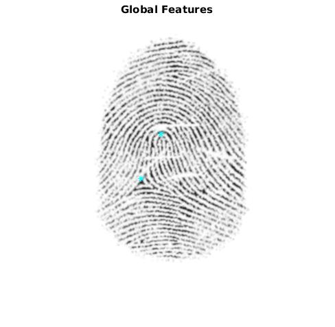
3.2) Minutiae
cp. Maltoni, chapter 3.7 Minutiae Detection (p. 143-157). Reference: Athi Narayanan S http://sites.google.com/site/athisnarayanan/s_athi1983@yahoo.co.in
Im = ~xor(skeletonMask, Mask2); % Window hsize = 3; window = zeros(hsize); border = floor(hsize/2); center = border+1; % Temporary data to work with row = sizeX + 2*border; col = sizeY + 2*border; double temp(row,col); temp = zeros(row,col); temp( (center):(end-border), (center):(end-border) ) = Im(:,:); % Minutiae containers featureRidge = zeros(row,col); featureBifurcation = zeros(row,col); for x = (center+10):(sizeX+border-10) for y = (center+10):(sizeY+border-10) % fill in window with values from temp e = 1; for k = x-border:x+border f = 1; for l = y-border:y+border window(e,f) = temp(k,l); f = f+1; end e=e+1; end; if (window(center,center) == 0) featureRidge(x,y) = sum(sum(~window)); featureBifurcation(x,y) = sum(sum(~window)); end; end; end; % Resize area featureRidge = featureRidge(1+border:end-border,1+border:end-border); featureBifurcation = featureBifurcation(1+border:end-border,1+border:end-border);
3.2.1) Ridge endings
[ridgeY, ridgeX] = find(featureRidge == 2); figure; imshow(skeletonMask,[]); axis off; title('Ridge endings'); hold on; plot(ridgeX, ridgeY, 'rs'); hold off; figure; imshow(I,[]); axis off; title('Ridge endings'); hold on; plot(ridgeX, ridgeY, 'rs'); hold off;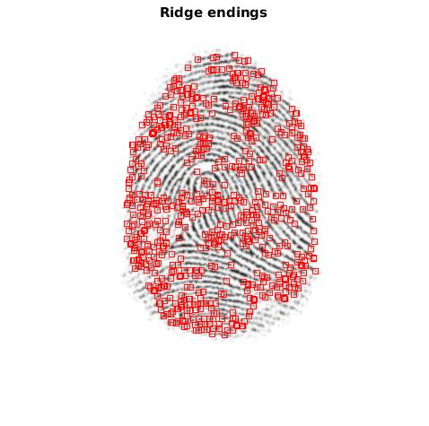 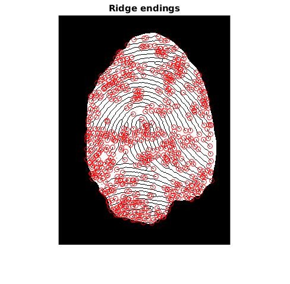 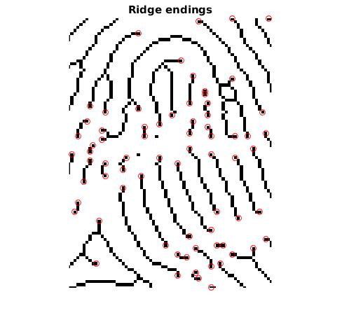
3.2.2) Bifurcations
[bifurcationY, bifurcationX] = find(featureBifurcation == 4); figure; imshow(skeletonMask,[]); axis off; title('Bifurcations'); hold on; plot(bifurcationX, bifurcationY, 'bo'); hold off; figure; imshow(I,[]); axis off; title('Bifurcations'); hold on; plot(bifurcationX, bifurcationY, 'bo'); hold off;
 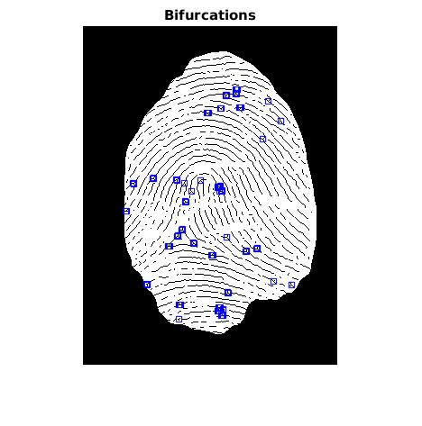
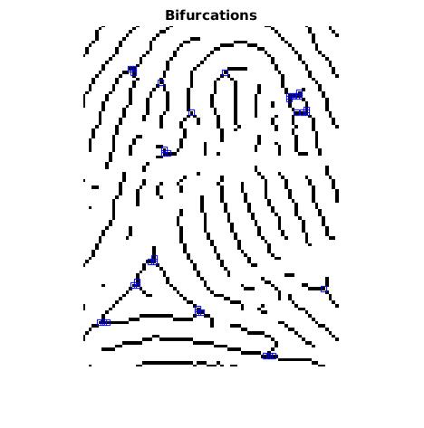
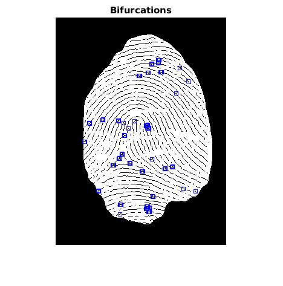
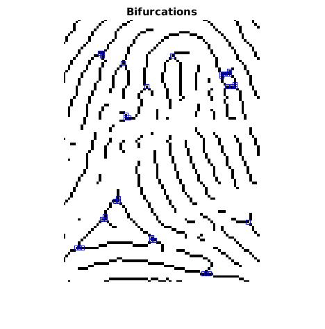